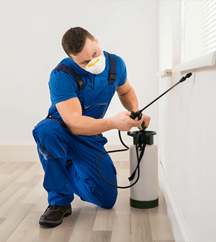
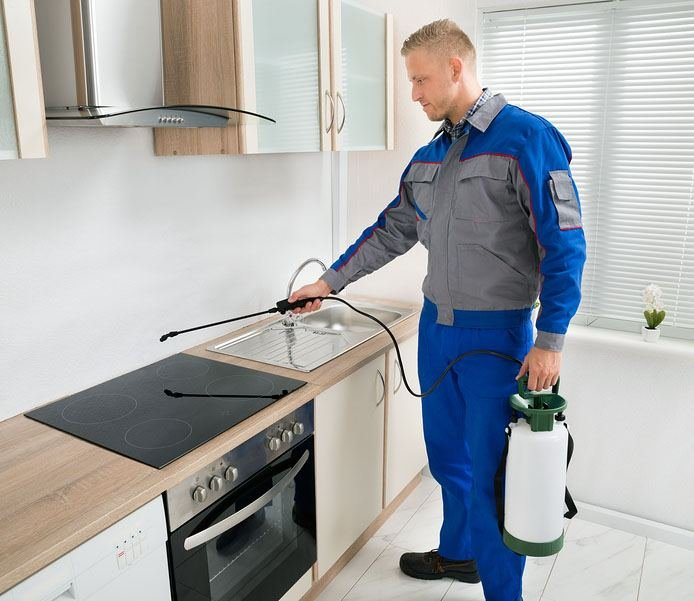
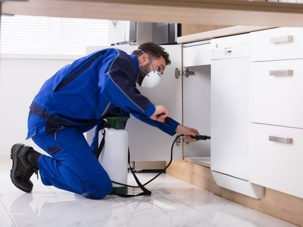
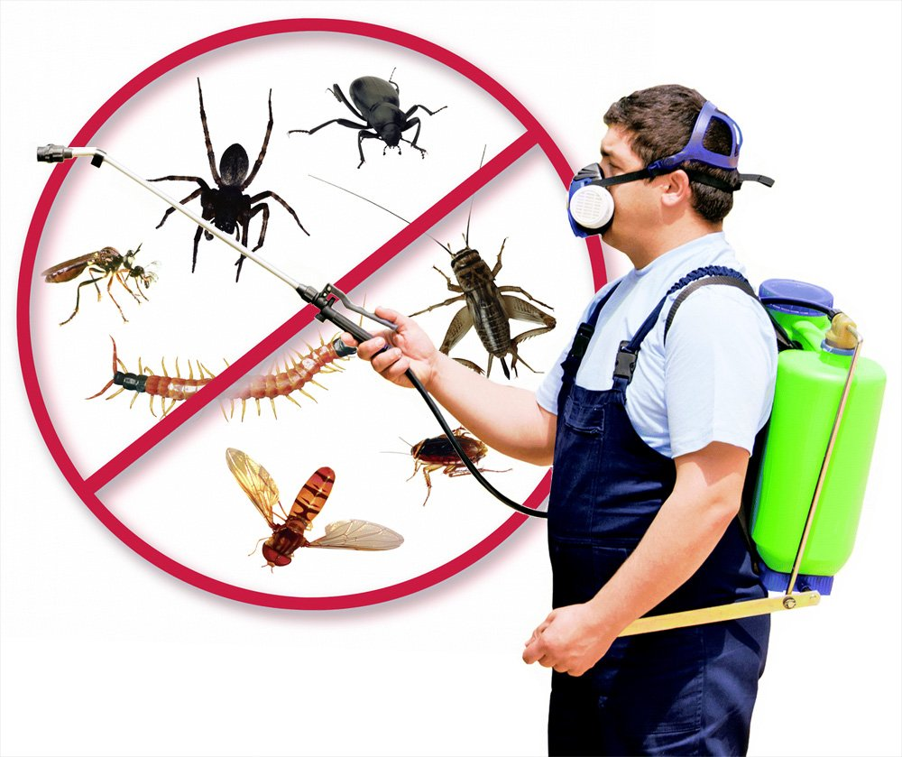

شركة مكافحة حشرات بالرياض
شركة مكافحة حشرات بالرياض
تعتبر مشكلة الحشرات من القضايا الشائعة التي تؤرق الكثير من سكان الرياض. هذه الآفات لا تسبب فقط الإزعاج، بل قد تحمل أمراضًا خطيرة وتسبب تلفًا للأثاث والممتلكات. لذلك، يحتاج سكان الرياض إلى خدمات موثوقة من شركة مكافحة حشرات بالرياض لضمان بيئة صحية وآمنة.
اتصل بنا الانارخص شركة مكافحه حشرات بالرياض
شركه مكافحه حشرات بالرياض
اختيار شركة مكافحة حشرات بالرياض يتطلب التأكد من جودة الخدمة المقدمة وفعاليتها. مع شركة “نقل الرياض”، يمكنك الاعتماد على فريق متخصص وخدمات متكاملة تلبي احتياجاتك بكفاءة وسرعة. من مكافحة الصراصير والنمل الأبيض إلى رش المنازل بأحدث التقنيات، تقدم الشركة حلولًا مبتكرة تجعلها الخيار الأمثل لكل من يبحث عن بيئة نظيفة وآمنة. إذا كنت تبحث عن خدمات موثوقة، فعليك التواصل مع “نقل الرياض” الآن لضمان التخلص من الحشرات نهائيًا.
شركة مكافحة حشرات شمال الرياض
تشمل خدمات “نقل الرياض” مناطق متعددة في العاصمة، مع تركيز خاص على شمال الرياض. هذه المنطقة تشهد إقبالًا كبيرًا على خدمات مكافحة الحشرات نظرًا للنشاط العمراني المتزايد فيها. تقدم شركة مكافحة حشرات بالرياض خدمات مخصصة لسكان شمال الرياض، تتضمن رش المنازل، المكاتب، والمزارع، باستخدام أدوات متطورة ومواد صديقة للبيئة.

مكافحه الحشرات و الصراصير
الصراصير من أكثر الحشرات إزعاجًا وانتشارًا في المنازل. تسبب هذه الحشرات تلوثًا للأطعمة والأواني، وقد تنقل
أمراضًا خطيرة.
تعتمد “نقل الرياض” على طرق مبتكرة في مكافحة الحشرات والصراصير، تشمل:
- رش المبيدات في الأماكن التي تختبئ فيها الصراصير مثل الشقوق والزوايا.
- استخدام طعوم خاصة لجذب الصراصير والقضاء عليها.
- تقديم نصائح للعملاء حول كيفية منع انتشار الصراصير في المستقبل.
تضمن الشركة القضاء الكامل على الصراصير مع متابعة دورية للتأكد من عدم عودتها.

مكافحه حشرات
شركه لرش المنازل من الحشرات
رش المنازل هو الحل الأمثل للتخلص من الحشرات وضمان بيئة نظيفة وآمنة. تقدم “نقل الرياض” خدمات رش المنازل بأسلوب
احترافي يناسب احتياجات كل منزل.
تشمل هذه الخدمة:
- تقييم مبدئي: يقوم فريق العمل بفحص المنزل لتحديد أنواع الحشرات ومستوى انتشارها.
- اختيار المواد المناسبة: يتم استخدام مبيدات خاصة لكل نوع من الحشرات.
- تنفيذ الخدمة: يتم رش المنزل بشكل كامل، مع التركيز على المناطق الحساسة مثل المطابخ ودورات المياه.
بفضل هذه الخطوات، تضمن شركة لرش المنازل من الحشرات مثل “نقل الرياض” راحة البال للعملاء وبيئة خالية من الآفات.

مكافحه حشرات
مكافحة حشرات بالرياض
تشتهر مدينة الرياض بمناخها الحار الذي يوفر بيئة مثالية لتكاثر الحشرات مثل الصراصير، النمل الأبيض، البعوض،
والذباب. تتطلب هذه المشكلة حلولًا متخصصة تعتمد على تقنيات حديثة ومواد آمنة لضمان التخلص التام من هذه
الآفات.
شركة مكافحة حشرات بالرياض، مثل “نقل الرياض”، تلبي هذه الحاجة من خلال تقديم خدمات رش ومكافحة شاملة
تناسب المنازل، المكاتب، والفنادق. تهدف الشركة إلى توفير بيئة نظيفة خالية من الحشرات باستخدام مواد آمنة للأطفال
والحيوانات الأليفة

افضل شركه تنظيف بالرياض
شركة رش حشرات
تعد رش الحشرات من الطرق الأكثر شيوعًا للتعامل مع الآفات المنزلية. تعتمد “نقل الرياض” على أحدث تقنيات رش
الحشرات لضمان القضاء على الحشرات من جذورها.
تستخدم الشركة مبيدات حشرية ذات جودة عالية ومعتمدة دوليًا، مما
يضمن فاعلية الرش وأمانه في نفس الوقت. كما تقدم الشركة خدمات دورية لرش المنازل، مما يساعد على الوقاية من عودة
الحشرات مجددًا. يرافق ذلك فريق عمل مدرب يضمن تنفيذ العملية بدقة وأمان.
Faq
شركه نقل الرياض لنقل الاثاث
ارخص شركة مكافحة حشرات
العديد من العملاء يبحثون عن خدمات مكافحة الحشرات بأسعار معقولة دون التضحية بالجودة. تجمع “نقل الرياض” بين
الجودة والتكلفة المناسبة، مما يجعلها خيارًا مثاليًا للعملاء الذين يبحثون عن أرخص شركة مكافحة حشرات في
الرياض.
تقدم الشركة باقات مختلفة تناسب احتياجات العملاء وميزانياتهم، بدءًا من خدمات الرش العادية وحتى
الخدمات المتخصصة مثل مكافحة النمل الأبيض أو الصراصير.
- لن تغادر المنزل
- امنه على صحه الاطفال
- جعل المنزل صحى
- استخدام مبيدات امنه
- اباده الحشرات
- التخلص من القوارض
تواصل معنا الان
فريق خدمه عملاء شركه نقل الرياض فى انتظار تواصلكم معنا
تواصل معنا الان